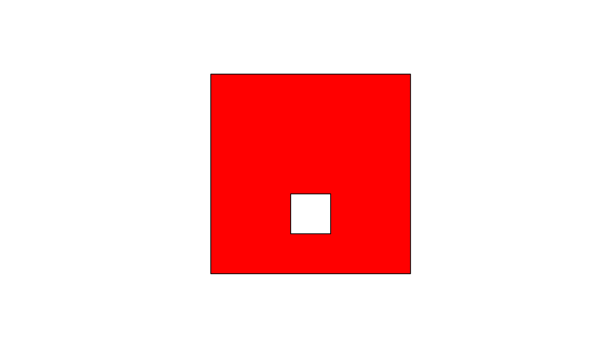

as.owin.RdFunctions to convert between spatstats observation window (owin)
format and various sp formats. S4-style as() coercion can be used
as well.
as.owin.SpatialPolygons(W, ..., fatal)
as.owin.SpatialGridDataFrame(W, ..., fatal)
as.owin.SpatialPixelsDataFrame(W, ..., fatal)
as.SpatialPolygons.owin(x)signature(from = "SpatialPolygons", to = "owin")
signature(from = "SpatialPixelsDataFrame", to = "owin")
signature(from = "SpatialGridDataFrame", to = "owin")
signature(from = "owin", to = "SpatialPolygons")
SpatialPolygons object to coerce to owin
owin object to coerce to SpatialPolygons format
ignored
formal coercion argument; ignored
In spatstat all spatial objects are assumed to be planar. This means
that spatstat is not designed to work directly with geographic
(longitude and latitude) coordinates. If a sp object is declared to
have geographic (unprojected) coordinates maptools refuses to convert
directly to spatstat format. Rather, these should be projected first
using e.g. spTransform. If you know what you are doing, and
really want to force coercion, you can overwrite the proj4string of the
sp object with an empty string, proj4string(x) <- "", which
will fool the system to think that the data is in local planar coordinates.
This is probably not a good idea!
An observation window in spatstat defines a planar region. It is
typically used to represent a sampling region. It comes in three different
formats: a simple rectangle, a polygon (vector format) or a binary mask (TRUE/FALSE grid; raster format). These can all be coerced to polygonal form internally in
spatstat and then converted to SpatialPolygons, which is what
as.SpatialPolygons.owin() does. For objects of class
SpatialPolygons (and SpatialPolygonsDataFrame) the sp
polygons are simply extracted and cast into spatstats polygon format
inside the owin object. For SpatialPixelsDataFrame and
SpatialGridDataFrame the grid is extracted and cast into spatstats
mask format inside the owin object. In all cases any data apart from the
spatial region itself are discarded.
When coercing a SpatialPolygons object to an owin object, full
topology checking is enabled by default. To avoid checking, set
spatstat.options(checkpolygons=FALSE) (from spatstat (1.14-6)).
To perform the checking later, owinpolycheck(W, verbose=TRUE).
run <- FALSE
if (require("spatstat.geom", quietly=TRUE)) run <- TRUE
if (run) {
## SpatialPixelsDataFrame -> owin
data(meuse.grid) # A data.frame
gridded(meuse.grid) = ~x+y # Now a SpatialPixelsDataFrame
mg_owin <- as(meuse.grid, "owin")
mg_owin
}
#> Warning: as.matrix.SpatialGridDataFrame uses first column;
#> use subset or [] for other columns
#> window: binary image mask
#> 104 x 78 pixel array (ny, nx)
#> enclosing rectangle: [178440, 181560] x [329600, 333760] units
if (run) {
## SpatialGridDataFrame -> owin
fullgrid(meuse.grid) <- TRUE # Now a SpatialGridDataFrame
mg_owin2 <- as(meuse.grid, "owin")
}
#> Warning: as.matrix.SpatialGridDataFrame uses first column;
#> use subset or [] for other columns
if (run) {
## SpatialPolygons region with a hole
ho_sp <- SpatialPolygons(list(Polygons(list(Polygon(cbind(c(0,1,1,0,0),
c(0,0,1,1,0))), Polygon(cbind(c(0.6,0.4,0.4,0.6,0.6),
c(0.2,0.2,0.4,0.4,0.2)), hole=TRUE)), ID="ho")))
plot(ho_sp, col="red", pbg="pink")
}

if (run) {
## SpatialPolygons -> owin
ho <- as(ho_sp, "owin")
plot(ho)
}
if (run) {
## Define owin directly and check they are identical
ho_orig <- owin(poly=list(list(x=c(0,1,1,0), y=c(0,0,1,1)),
list(x=c(0.6,0.4,0.4,0.6), y=c(0.2,0.2,0.4,0.4))))
identical(ho, ho_orig)
}
#> [1] FALSE
if (run) {
## owin -> SpatialPolygons
ho_sp1 <- as(ho, "SpatialPolygons")
all.equal(ho_sp, ho_sp1, check.attributes=FALSE)
}
#> [1] "Names: 1 string mismatch"